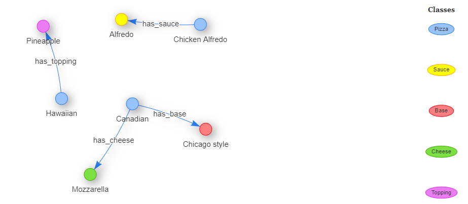

Ontologies
Learning objectives
Concepts
- Ontologies
- Classes
- Individuals
- Relationships
- Triples
Practical Skills
- Building a very basic ontology (individual assignment #2)
What are ontologies?
“An ontology encompasses a representation, formal naming and definition of the categories, properties and relations between the concepts, data and entities that substantiate one, many, or all domains of discourse.” (Wikipedia)
Components of an ontology
Classes: The type of things that exist in the domain. They can be represented as nodes or as attributes of nodes in a graph.
Individuals: These are instances of objects or concepts that belong to a class. They are represented as nodes in a graph.
Relationships: These are the ways in which individuals and classes can be related to one another. They are represented as edges in the graph.
Attributes: Attributes are characteristics of individuals, classes, or relationships (e.g. price of an individual of the class product, or date of birth of an individual of the class person).
Triples: A triple is a representation of ontological components that take the following form:
SUBJECT PREDICATE OBJECT
For instance:
In a film ontology: Sylvester Stallone Wrote Rocky
In a Dalhousie ontology: Philippe Mongeon teaches Data Management course
In a hockey ontology: Tuukka Rask has_position Goaltender
Basically, the subject and the objects are two nodes in the network, and the predicate is the label of the that unites them in the network.
Building a simple ontology
Let us now go through a series of five simple steps to build a very simple ontology. This is the exact process that I suggest that you follow for the final assignment. Please use this template for this purpose and for your final assignment. It comes pre-loaded with the example presented below.
Important note: in order to simplify the process we will not use attributes in this example, nor in the final assignment.
The five steps are:
- Defining classes
- Defining individuals
- Assigning individuals to classes
- Defining characteristics
- Writing triples
Here’s an example of how to follow these steps to fill the provided template to build a basic pizza ontology.
What kind of things do exists in the domain you want to represent?
These are your classes. Make a list and insert them in the classes sheet of the template.
Class_id Class 1 Pizza 2 Base 3 Sauce 4 Cheese 5 Topping
What individuals (instances of classes) do you want to include in my ontology?
These will be the nodes in your network. Write in the template the name of each individual in the individuals sheet under the name column.
Individual_id Name 1 Hawaiian 2 Canadian 3 Chicken Alfredo 4 Alfredo 5 Chicago style 6 Mozzarella 7 Pineapple
To which class do each individual belong?
To what class does each of my individuals belong. Your individuals should belong to only one class. You should also have at least one individual for each class, otherwise that class is irrelevant for your ontology. Write the class to which each individual belongs in the class column of he individuals sheet.
Individual_id Name Class_id 1 Hawaiian 1 2 Canadian 1 3 Chicken Alfredo 1 4 Tomato 3 5 Chicago style 2 6 Mozzarella 4 7 Pineapple 5
What type of relationships between individuals exist in my ontology?
In the relationships sheet, make a list of the different types of relationships that exist between your individuals. Your relationship should be verbs (e.g., acts_in, is_author_of, has_flavor, bought). For each of your relationship, consider whether it has a inverse relationship (e.g., has_actor, has_author is_flavor_of, was_bought_by) and if that is the case, indicate it in the inverse_relationship column. Here is an [example:\\](example:){.uri}Relationship_id Relationship Inverse_relationship 1 has_topping is_topping_of 2 has_base is_base_of 3 has_sauce is_sauce_of 4 has_cheese is_cheese_of Important note: For your individual assignment you should have at least 3 relationships, excluding the inverse ones and you should not use the is_a relationships (these are used to link objects with their class, but for our purpose, we included the class as an attribute in the individuals sheet).
What relationships exist between individuals exist in my ontology?
This is where you write your triples in the triples sheet of the template. Make sure that each individual has a relationship with at least one other. In sheet you want to write the ID of each component, but it may be less confusing to start with the actual names of the individuals and relationship, like this:
Subject_id Relationship_id Object_id Canadian has_cheese Mozzarella Canadian has_base Chicago style Hawaiian has_topping Pineapple Chicken Alfredo Pizza has_sauce Alfredo
And then you can replace the values with their respective IDs.
Subject_id Relationship_id Object_id 2 1 6 2 2 5 1 1 7 3 3 4
As mentioned above, you could normally represent the relationship between an individual and its class can be represented in triples using the is_a relationship (e.g., Philippe is_a Professor). But for this assignment we will not use the is_a relationship, since the link between each individual and its class is already declared in the individuals table.
Visualizing our graph
I created a very primitive web application that can read data from the ontology template provided. Here is our graph:

Exercises
- Download the template file that contains the data used in the example above ontology.
- Create a list of 10 to 20 individuals that cover the five classes.
- Create a list of 10 to 20 triples that cover the four types of relationships.
- Visualize your ontology with this web application.
Note: For the graph visualization tool to work, you must use the template and keep the names of the sheet and columns exactly as as they are.